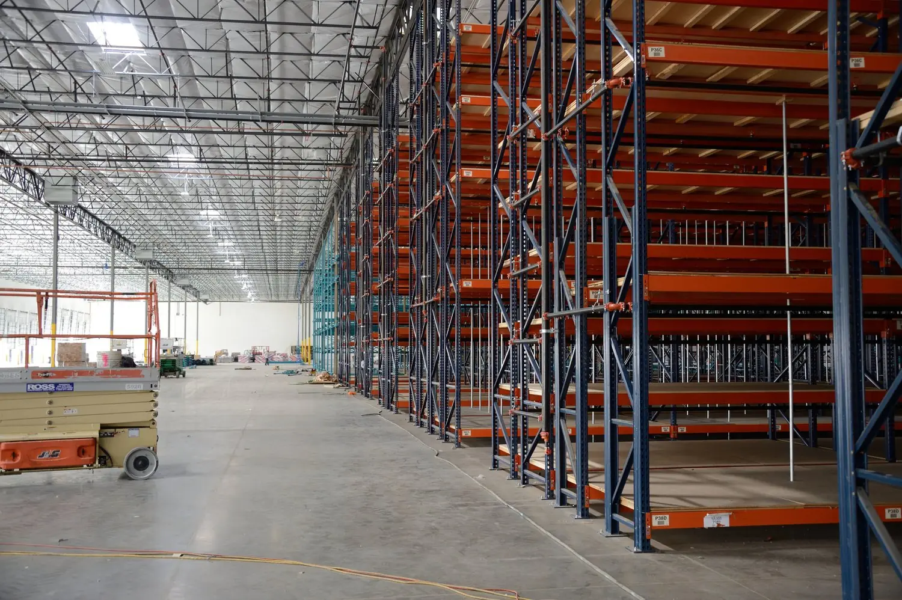
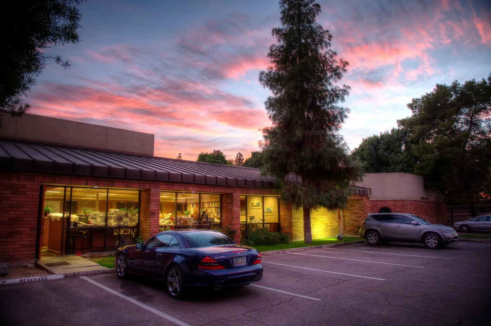
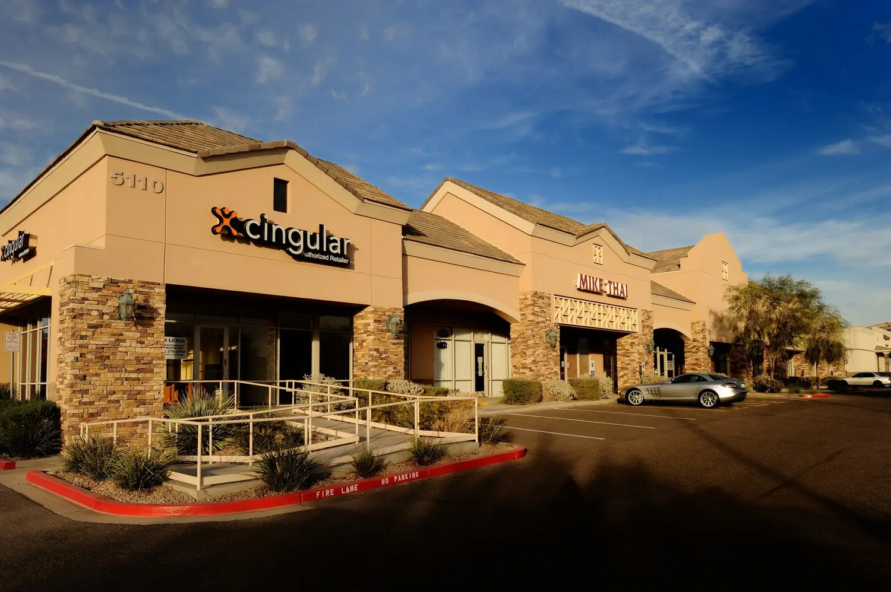
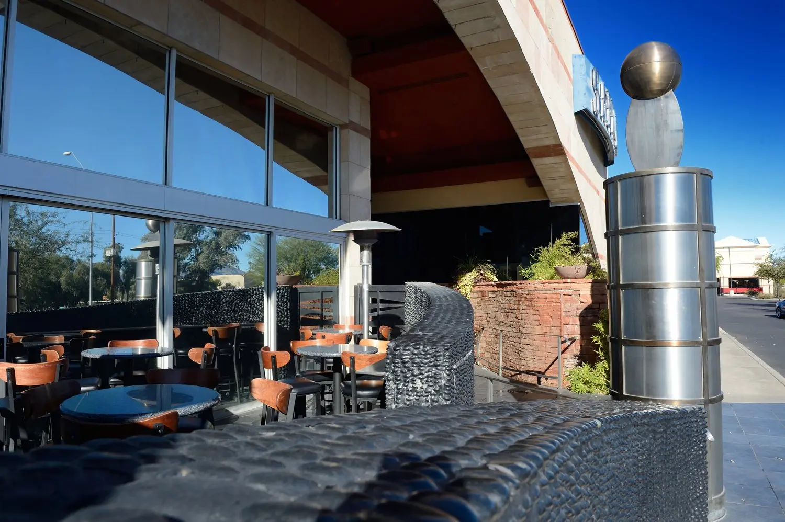
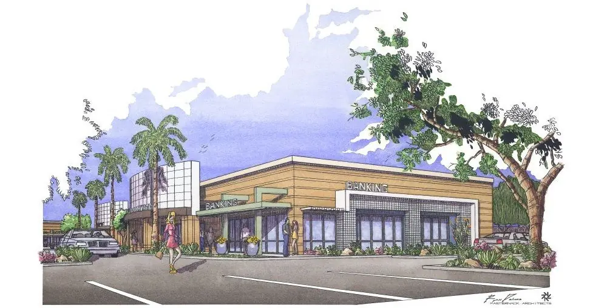

A‑201
Estrella Promenade
Phoenix
A standalone Walgreens behind the Ed Mell sculpture at the northwest corner of 51st Avenue and Baseline. Stone facing and large overhangs for shade.
Work
Phoenix
A standalone Walgreens behind the Ed Mell sculpture at the northwest corner of 51st Avenue and Baseline. Stone facing and large overhangs for shade.

Phoenix
A 125,000 square foot showroom and 375,000 square foot distribution center at 67th Avenue and the I‑10, part of the 74 acre Estrella Vista Commerce Center. Clean contemporary concrete tilt panel.

Cave Creek corridor
Five buildings and 40,000 square feet at Desert Willow Parkway and Cave Creek Road, with whimsical architecture and lush landscape.

Phoenix
A 26,000 square foot garden office complex at 745 East Maryland Avenue, home to the firm and Pasternack Properties.

Mesa
A 16,000 square foot center near Southern Avenue and Higley Road with rich stone columns and deep earth tones.

Restaurant
Sloped roofs, stone accents, and stainless steel art and sculpture for an evening that doubles as an architectural experience.

Gilbert
A 100,000 square foot tilt panel complex at San Angelo and Fiesta Boulevards, one of five buildings designed in a similar style.
Developing now

